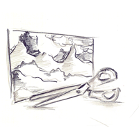
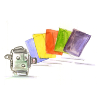

A simple and efficient way to design application icons is to use a verb which represents the application as the visual idea or metaphor basis. We detail this special design process below for the applications icons. Remember that applications should use a 3D isometric view unlike the documents icons in order to easily distinguish them.
When the main new possibility given by an application can be represented metaphorically or symbolically with a tool, you should add an adequate tool representation to the icon.
Examples : with a development environment, you can use a screw driver, with a word processor, you can use a pen, with a library like application, you can use a magnifying glass.
When the application is document/media oriented, the essential part of the icon background should be constitued by an adequate (habitually left inclined) document/media representation.
Example : with an image manipulation application, you can use a photo as the background, with a layout page application, you can use magazine page as the background, with a sound application, you can use waveform sound representation as the background.

When the main new possibility given by an application matches a real object (calculator, chess game etc.), you should organize your icon around an adequate representation of the real object.
When the main new possibility given by an application is an interaction with a physical device (camera, tablet, coffee machine etc.), you should add an adequate representation of the physical device to the icon.

An application icon will combine most of time two of the recommendations described above, sometimes three, but you should avoid to mix the four recommendations together.
Examples : with a movie editing application, the left background can be a set of images and the physical device on the right a camcorder, with a calculator application, the left background can be a paper with additions and other formulas and the real object on the right a calculator itself.